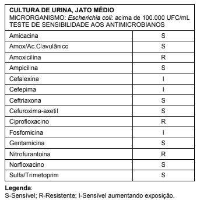
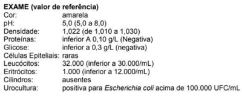

Homem, 30 anos de idade, com lesão raquimedular sacral, evoluiu com quadro de bexiga acontrátil. Qual é a técnica de drenagem vesical de escolha?
Mulher, 35a, apresenta dor para urinar, aumento da frequência, diminuição da quantidade e urgência miccional há dois dias. Nega febre, calafrios, dor lombar e gravidez. Antecedente pessoal: dois episódios semelhantes nos últimos seis meses. Exame sumário de urina: hemácias= 20/campo, leucócitos= > 100/campo, proteína= ausente, nitrito= +++/4+, leucócito esterase= +++/4+; Urocultura: E coli > 10⁵ UFC, sensível a todos os antibióticos testados. APÓS O TRATAMENTO DESTE EPISÓDIO, A CONDUTA PARA PREVENIR NOVAS INFECÇÕES DO TRATO URINÁRIO É:
A infecção urinária resulta da interação entre a bactéria e o hospedeiro. Considerando essa informação, assinale a alternativa correta.
A infecção do trato urinário na infância tem como principal agente etiológico a Quais características desse patógeno facilitam o surgimento de infecção urinária?
J.B., 31 anos, procurou o pronto-socorro com disúria e polaciúria há 2 dias. Recebeu um receituário com antibiótico. Seguindo as novas diretrizes de tratamento de cistite urinária não complicada, o antibiótico receitado deve ser
Gestante de 23 semanas, com pré-natal sem intercorrências e sem nenhuma queixa urinária, traz exame de urina com o seguinte resultado: A conduta na consulta pré-natal é

Considerando o exame rotineiro de urina (urina 1), qual teste a seguir apresenta maior especi cidade para o diagnóstico de ITU?
Mulher, 43 anos, procurou atendimento médico por estar apresentando urina de aspecto turvo e com cheiro desagradável há 3 dias. Informa que isso já aconteceu em outras oportunidades, tendo sido nos últimos 12 meses tratada com antibióticos após confirmação de crescimento bacteriano em exame de urocultura. Considerando as evidências atuais e o histórico clínico desta paciente, a melhor abordagem para esta situação seria:
Mulher, 22 anos, procura atendimento no ProntoSocorro com quadro de dor em baixo ventre episódica e relacionada à micção, associada a disúria e eventual estrangúria, de início há cerca de 12 horas. Relata episódio anterior do mesmo quadro há cerca de 04 anos. Vida sexual ativa com sexo desprotegido eventual. Nega corrimentos ou sangramentos vaginais. Ectoscopia vulvar sem alterações. Demais pontos do exame físico sem alterações. A conduta mais acertada frente ao quadro clínico é:
Assinale a alternativa correta em relação à infecção do trato urinário associada a cateteres vesicais.
Mulher, 56 anos, menopausa aos 52 anos, consulta em ambulatório por dor suprapúbica e aumento da frequência miccional há 2 dias. Nega uso de terapia hormonal, febre ou leucorreia. Relata 2 episódios semelhantes ao atual nos últimos 4 meses, com uroculturas positivas e melhora após uso de antibiótico via oral. Assinale a alternativa correta em relação ao caso.
Mulher, 65 anos, no momento, assintomática, comparece à consulta na unidade básica de saúde com exames de seguimento. Entre os exames, apresenta sumário de urina com presença de leucocitúria. Diante desse quadro, a conduta mais adequada é
Paciente secundigesta, com 27 semanas de idade gestacional, encontra-se internada na maternidade para tratamento de infeção urinária. Informa três episódios de infecção do trato urinário durante essa gravidez. No momento da alta, é correto recomendar:
Mulher de 32 anos apresenta quadro de disúria, polaciúria e estrangúria, temperatura de 37,8°C e dor suprapúbica, descrito como primeiro episódio. O exame de urina mostra 20 a 30 hemácias por campo e 40 piócitos por campo. A melhor conduta, nesse caso, é:
Mulher, 37 anos, com quatro episódios de cistite no último ano, todos tratados com sucesso com nor oxacino por três dias. Última menstruação há dez dias. No momento está assintomática e refere que os episódios da infecção a limitam muito em suas atividades. Para realizar antibioticoprofilaxia para infecção urinária nesta paciente, o fármaco melhor indicado é:
Mulher de 27 anos, hígida, comparece para consulta na Unidade Básica de saúde com queixa de disúria, polaciúria e dor suprapúbica desde o dia anterior. Nega corrimento, febre ou dor lombar. Diga qual o diagnóstico e o exame complementar necessário para iniciar tratamento:
Sobre o tratamento de infecção urinária não complicada, assinale a alternativa correta.
Paciente do sexo feminino, 40 anos, comparece para avaliação médica com quadro de disúria, polaciúria, febre de intensidade moderada e queda do estado geral. Refere ter tido 3 episódios de infecção do trato urinário (ITU) no último semestre. Considerando o quadro acima, assinale a alternativa correta.
O aparecimento da infecção do trato urinário (ITU), con figura uma das mais comuns complicações médicas da gravidez. A bacteriúria assintomática ocorre em 2 a 7% das gestações e, seu rastreamento e tratamento é muito importante para reduzir a progressão às consequências mais severas. Em relação à terapêutica das ITU, tem-se que:
Viviane, 25 anos, está há dois dias com disúria, polaciúria e urgência miccional. Não apresenta outras queixas associadas ou problemas de saúde prévios, negando sintomas vaginais. Não está grávida. Ao exame, a punho-percussão lombar é negativa. Ao atendê-la na Unidade de Saúde da Família, deve-se:
Jovem de 18 anos, sexo feminino, queixa de disúria, poliúria, noctúria e dor em baixo ventre há 5 dias. Nega episódios prévios ou febre. O estado geral está preservado. A conduta adequada deve ser
Uma gestante com 28 semanas de gestação, com infecções urinárias repetidas desde o primeiro trimestre, deverá realizar.
Paciente de 22 anos, sexo feminino, comparece ao consultório queixando de disúria, polaciúria e dor em baixo ventre há um dia. Nega febre, dor lombar ou outras queixas. Nesse caso, é necessário:
A Escherichia coli é o agente etiológico mais encontrado em 80 a 90 % dos casos no primeiro surto de infecção do trato urinário (ITU) na infância. Considerando isso, o tratamento pode ser feito, como primeira escolha com todos os antibióticos abaixo, EXCETO:
A respeito de doenças infecciosas durante a gravidez, julgue o item que se segue. Estudos recentes mostram que o risco de desenvolvimento de pielonefrite em gestantes com bacteriúria assintomática é igual ao da população geral, portanto a antibioticoterapia só deve ser realizada em gestantes com infecção urinária sintomática.
A profilaxia para infecções urinárias de repetição pode ser realizada com qualquer dos antibióticos, EXCETO:
Primigesta, com 23 anos de idade, 27 semanas de gestação, relata que, há dois dias, apresenta dor na região lombar à direita. Relata, ainda, que há um dia vem se sentindo muito mal, com calafrios e náuseas. Hoje, pela manhã, apresentou febre de 38,5ºC, tendo feito uso de antitérmico. Ao exame físico: estado geral regular; descorada +/4+; levemente desidratada; afebril, eupneica; frequência cardíaca de 104 bpm; Pressão arterial = 110 x 70 mmHg. Relatou dor intensa à punho percussão na região lombar direita. Ao exame obstétrico: altura uterina de 28 cm, 156 batimentos cardíacos fetais por minuto; movimentos fetais presentes, ausência de contrações uterinas. Qual a conduta a ser tomada?
Gestante de 30 semanas, assintomática, traz o seguinte exame de urina. O médico deve:

Uma adolescente de 17 anos, recém iniciada a vida sexual, evoluiu com seu primeiro episódio de disúria, tenesmo vesical, polaciúria, calafrios e dor em baixo ventre há 12h. Negava febre, hematúria, leucorreia e dispareunia. Procurou pronto atendimento onde foi atendida e prescrito tratamento ambulatorial com cipro oxacino por 7 dias. Sobre o quadro acima, escolha o melhor diagnóstico?
Uma adolescente de 17 anos, recém iniciada a vida sexual, evoluiu com seu primeiro episódio de disúria, tenesmo vesical, polaciúria, calafrios e dor em baixo ventre há 12h. Negava febre, hematúria, leucorreia e dispareunia. Procurou pronto atendimento onde foi atendida e prescrito tratamento ambulatorial com cipro oxacino por 7 dias. Analise e aponte qual a melhor conduta.
Martiniana, 22 anos, G3P2, chega ao seu PSF no curso da 23ª semana de gestação para mostrar resultados de exames. Uma urocultura, sem antibiograma, demonstra crescimento bacteriano ( assintomática. Sua conduta é:
Você atua como médico de família em uma unidade básica de saúde e atende um paciente do sexo masculino de 58 anos, que traz uma carta de contrarreferência de um serviço de urologia, com diagnósticos de hiperplasia benigna de próstata e infecção de trato urinário recorrente. O urologista recomenta os seguintes tratamentos para uso contínuo: doxazozina 1 mg (VO) 1x/dia e nitrofurantoína 100 mg (VO) 1x ao dia, à noite, os quais o paciente está em uso há 1 mês, e dá alta do serviço especializado para que você continue o seguimento do paciente. No momento da sua consulta, o paciente se queixa de a namento do jato urinário e esforço miccional, sem outras queixas, e traz urocultura positiva para E. coli, 100.000 col/mL, sensível a todas as quinolonas cefalosporinas, e aminoglicosídeos, mas com sensibilidade intermediária à nitrofurantoína. Diante dessa situação, assinale a alternativa que contém a conduta mais adequada para esse paciente.
Mulher de 30 anos de idade queixa-se de disúria, polaciúria, tenesmo vesical e desconforto suprapúbico, constantes há 3 semanas. Realizou 3 exames de urina nesse período, que mostraram leucócitos variando entre 10.000 a 15.000 por ml. Todas as uroculturas foram negativas. Sabendo-se que não há infecção vaginal, indica-se:
Mulher, 77 anos, diabética, hipertensa e atualmente assintomática, encontra-se em pré-operatório de cirurgia para prótese de joelho, em decorrência de limitação funcional por osteoartrose. O exame de urina I pré-operatório mostra: nitrito negativo, leucócitos de 418 mil / mL, hemácias de 18 mil / mL, cilindros negativos. A urocultura evidenciou crescimento de Escherichia coli, 1 milhão de unidades formadoras de colônias, sensível ao tratamento com: cefalosporinas de primeira e terceira gerações, quinolonas, aminoglicosídeos, sulfa + trimetroprim e carbapenêmicos. Assinale a conduta apropriada a ser adotada.
Mulher, 22a, vem para consulta na Unidade Básica Saúde queixando-se de dor para urinar acompanhada de aumento da frequência há três dias, nega febre e corrimento vaginal. Antecedentes pessoais: nega quadro clínico semelhante anterior, última menstruação há 7 dias. Exame físico: abdome: sinal de Giordano negativo. Exame de urina feito com tira reagente evidenciou pH = 5,0; nitrito = positivo e leucoesterase = +++/3+. A CONDUTA É:
Mulher, 27 anos, com diabete melito tipo 1, vem à emergência com história de hematúria macroscópica, febre e dor em baixo ventre iniciada há 24 horas. No momento, não consegue urinar. Realizada sondagem vesical de alívio e enviada urina para cultura. Em relação a esse caso, presença de, pelo menos, ______unidades formadoras de colônia indica o diagnóstico de infecção urinária. Esse é o segundo episódio de infecção urinária no último semestre, o que _______a coleta de cultura e investigação complementar por se tratar de infecção urinária de repetição. Uma vez indicada a antibioticoterapia, ________ pode ser utilizada como droga de primeira escolha por ________dias. As informações que completam corretamente as lacunas, na ordem que se encontram, estão contidas na alternativa:
Que grupo de pacientes assintomáticos, dentre os abaixo, deve ser tratado com antibiótico se apresentar urocultura positiva para Escherichia coli > 100.000 UFC/ml?
Mulher de 23 anos de idade é atendida na UPA Cidade Esperança com queixas de disúria há 4 dias. Apresenta febre há 2 dias e hoje caiu no banheiro. Refere antecedente de dois episódios de infecção urinária no último ano para os quais usou nor oxacina e fosfomicina. Ao exame, consciente e orientada, temperatura = 39 °C, FC = 96bpm, PA = 100x70 mmHg, FR = 22 incursões/min. Exames: Hto 36%, leucócitos = 18.000/mm³, Bast = 6%, Seg =72%, plaquetas=180.000/mm³; PCR = 96mg/L; sumário de urina: 100 leucócitos/campo, 20 hemácias/campo, nitrito positivo. Ao decidir sobre a terapia antimicrobiana, deve-se considerar:
Paciente SAG de 28 anos, G2 para P1 , com gestação a de 20 semanas ,Data do último parto há 2 anos, assintomática, Temperatura de 36,6oC vem a consulta com os seguintes exames 1.a Urocultura positiva na 1.a consulta – Escherichia coli>100000 – Assintomática ; 2.a urocultura positiva no 2.o trimestre – Escherichia coli>100000 – Assintomática, com relação ao caso assinale alternativa correta:
Você é o médico responsável pelo acompanhamento clínico de uma paciente feminina de 77 anos internada pela Ortopedia por uma fratura de articulação coxofemoral, em uso de sonda vesical de demora por incontinência urinária sem sinais de retenção. Paciente apresenta boa evolução clínica e sem sinais ou sintomas significativos, exceto dor no local da cirurgia. Após você convencer o médico residente a remover a sonda vesical de demora no 3° dia de pós-operatório, ele resolveu solicitar um exame Parcial de Urina (PU) com urocultura, com resultado de PU dentro da normalidade e crescimento de Candida albicans
GFS de 58 anos deu entrada no PS, refere que há mais ou menos 4 semanas iniciou com febre acompanhado de calafrios, e pequenos lesões pustulosas e membros inferiores, como achados laboratoriais presença de leucocitose, glicemia 290mg e EAS presença de piúria, na TC de abdômen mostra-se com aumento do rim Direito e área focal arredondada com diâmetro de 4cm, descrito como sinal de anel; qual a melhor conduta para esse caso:
Uma grávida apresenta quadro sugestivo de pielonefrite aguda com febre, dor lombar e alterações urinárias. O exame clínico revela bom estado geral, feto viável, pressão arterial de 100 x 70 mmHg e frequência cardíaca de 88 bpm. Dentre os agentes antibacterianos abaixo, identi que aquele que pode ser iniciado com segurança enquanto se aguarda o exame de urocultura:
A infecção do trato urinário (ITU), uma das condições mais frequentes nos serviços de saúde, tem um espectro de apresentação clínica variável, incluindo a cistite, pielonefrite e bacteriúria assintomática. Sobre as ITUs podemos afirmar que:
Miriam tem 23 anos, vai à consulta no ambulatório por apresentar, há 3 dias, disúria, polaciúria e dor em baixo ventre. Refere que começou a fazer uso de Ibuprofeno por conta própria, mas, os sintomas não estão melhorando. Refere que não apresenta corrimento vaginal e que sua menstruação nalizou há 3 dias. Ao exame físico apresenta- se com PA: 110/80, FC: 90 bpm, FR: 17 irpm, T: 38°C, Tórax sem alterações, abdome com leve desconforto à palpação do hipogástrio e punho percussão lombar: negativa. Refere ainda que vem com um quadro de infecção urinária pela segunda vez tendo acontecido o episódio anterior há 12 meses. Diante do caso apresentado, assinale a alternativa que indica a conduta CORRETA:
Gestante com infecção urinária apresenta ao antibiograma sensibilidade a vários antibióticos, sendo a melhor opção dos listados abaixo,
Sobre as Pielonefrites Enfisematosas, é INCORRETO:
Mulher com beta hcg positivo chega para consulta médica em 06/06/2018. Informa que sempre teve ciclos regulares e que a última menstruação iniciou-se em 02/04/2018. Queixa-se de algúria e urgência miccional. Ao exame clinico, Tax 36,2 C, FC 78bpm, Giordano negativo. Os exames laboratoriais solicitados revelaram: leucócitos globais 8.800. Urina rotina com piócitos 12p/c, cristais ausentes, hemácias ausentes e ora aumentada. Gram de gota: bastonetes gram negativos 9p/c. Entre as alternativas abaixo, a melhor opção para este tratamento é:
Em pacientes com ITU (Infecção do Trato Urinário), em estado febril, devem ser evitadas drogas que apresentam excreção urinária, mas não apresentam níveis séricos adequados, como a:
Mulher de 26 anos com polaciúria e disúria iniciadas há 1 dia. Sem febre. Nega episódios semelhantes anteriormente. Exame físico sem alterações significativas. Qual a opção mais adequada para o tratamento?
Bacteriuria assintomática Paciente de 29 anos, GIII PII A0, 32 semanas de gestação. Ausência de quaisquer intercorrências nesta gestação. Comparece em consulta de pré-natal trazendo resultado de exames solicitados na consulta de rotina há 30 dias e nega qualquer sintoma anormal. Entre os exames observa-se resultado de urocultura positivo para Klebisiela pneumoniae ( > 100.000 UFC ), o antibiograma evidencia: cipro oxacino – sensível, cefalexina – resistente, nitrofurantoína – sensível , ceftriaxona – sensível, ampicilina – resistente. Em relação ao caso clínico acima é correto afirmar:
Bacteriuria assintomática Maria Aparecida, negra, 36 anos, bem-humorada, compareceu à Unidade Básica de Saúde onde tem como equipe: a agente de saúde Filomena, a técnica de enfermagem Carla, o enfermeiro Mário e a médica Daiane. Maria Aparecida tem uma história de realização de Citopatológico (CP) de colo de útero com uma certa regularidade. Seu último exame foi há 3 anos, quando era casada com Paulo, uma relação que durou 7 anos. O resultado fora normal. Na mesma ocasião, em uma campanha de educação em saúde promovida pelo Ministério da Saúde e Secretarias de Saúde do Estado e do Município, Maria fez a mamogra a também com resultados normais. Maria Aparecida teve menarca aos 13 anos, sexarca aos 16 anos. Teve uma lha, Lelê, e um lho, Carlinhos, com Paulo. Duas gestações com dois partos vaginais. Maria Aparecida menstrua regularmente. Sem casos conhecidos de câncer de mama na família. Divorciou-se de Paulo há 2 anos: me libertei doutora - sempre dizia à Daiane. Recentemente, conheceu um homem de 30 anos, Valdomiro, com quem está namorando e já está pensando em se "juntar". Maria é hipertensa em uso de enalapril 10 mg de 12/12 horas. Na consulta, observou-se PA 140/90 mmHg, pesa 78 kg, mede 1,60 m de altura (IMC 30,5). Maria Aparecida, já no segundo trimestre da gestação, vem com Valdomiro a mais uma consulta de pré-natal. Está assintomática, mas vem preocupada porque viu que, no exame de rastreamento, apareceu um resultado anormal. - O que é isso doutora? - pergunta à Daiane. Está circulado 500.000 colônias por ml de urina. Considerando o caso clínico 01, analise as assertivas e identifique com V as verdadeiras e com F as falsas. ( ) Após o tratamento da bacteriúria assintomática, deve-se realizar urocultura de controle de 7 a 10 dias após o término do tratamento. ( ) Os antibióticos de escolha para esse tratamento são: ampicilina 500 mg, azitromicina 500 mg, cefalexina 500 mg ou nitrofurantoína 100 mg. ( ) De ne-se como bacteriúria assintomática o crescimento de > 10⁵ colônias por ml de urina coletada por jato médio sem sintomas urinários. ( ) O rastreamento para infecção urinária em usuários assintomáticos não é recomendado, a não ser em casos específicos como em gestantes, nos quais deve ser feito no primeiro e no terceiro trimestre da gestação. A alternativa que contém a sequência CORRETA, de cima para baixo é:
A infecção do trato urinário (ITU) acontece quando a ora normal da área periuretral é substituída por bactérias uropatogênicas que ascendem pelo trato urinário. A infecção ocorre devido a fatores ligados à virulência da bactéria e suscetibilidade do hospedeiro que permitem a colonização e aderência de microorganismos. Em caso de cistite bacteriana aguda não complicada, a alternativa com a(s) melhor(es) opção(ões) terapêutica(s) de primeira linha é:
Luiza, 19 anos, primigesta na 38ª. semana de gravidez, comparece a uma consulta na UBS com queixa de disúria e polaciúria. Traz uma exame de urina realizado no dia anterior o qual apresenta incontáveis piócitos. Podemos recomendar o uso dos seguintes antibióticos no tratamento da cistite aguda nesta paciente, EXCETO:
OJM, 26 anos, previamente com boa saúde, procura atendimento de urgência com queixa de disúria e polaciúria há 2 dias. Nega febre ou outros sintomas. Usa pílula anticoncepcional como método contraceptivo. Ao exame físico apresenta: bom estado geral, Giordano negativo e ao exame ginecológico, dor ao toque da parede vaginal anterior na topogra a da bexiga. Restante dentro dos limites da normalidade. Segundo as diretrizes médicas brasileiras mais recentes é correto afirmar que
Paciente do sexo feminino traz dois exames da urina mostrando leucocitúria intensa, com cultura de urina colhida de forma asséptica, indicando crescimento bacteriano acima de 100.000 UFC/ml. A paciente nega disúria, calafrios, poliúria, febre ou dor abdominal. A antibioticoterapia nessa paciente deve ser iniciada caso ela:
Paciente de 42 anos será submetida à cirurgia plástica para correção de cicatriz na face, causada por mordida de cachorro há três anos. Nos exames pré-operatórios o cirurgião nota presença de 100 mil colônias de E. coli na urina, sensível a cefalosporinas e quinolonas e, por isso, pede parecer ao urologista. Ela está assintomática e usa apenas um hipoglicemiante oral; o exame físico está normal, exceto por IMC = 31. A melhor conduta é:
Primigesta de 16 semanas, assintomática, tem urocultura positiva para Escherichia coli. Quanto ao diagnóstico e conduta, assinale a alternativa CORRETA:
Quais são os sinais e sintomas de uma cistite?
O diagnóstico das infecções do trato urinário (ITU) era feito prioritariamente pela urocultura. Contudo, pelas limitações e demora do resultado da urocultura quantitativa e, mais importante, pela acurácia do diagnóstico clínico, a recomendação atual é fazer o diagnóstico pelo quadro clínico. Cabe ao médico diferenciar clinicamente quais sejam os sintomas de uma pielonefrite e os de uma cistite. Caracteriza um sintoma predominante de cistite
A bacteriúria assintomática consiste na presença de bactérias na urina de pacientes sem sintomas. O tratamento dessa condição, está indicado para
Considere os itens abaixo: I. Gestação; II. Vida sexual ativa; III. Atrofia urogenital no climatério. Quais estão associados à infecção do trato urinário em mulheres?
Qual é o fármaco de escolha para tratamento da pielonefrite aguda não complicada de origem comunitária?
Inf ecção urinária na gestação Sabe-se que a infecção urinária na gravidez, quando não tratada, pode levar a sérias complicações materno fetais como: o trabalho de parto prematuro, recém-nascidps de baixo peso, ruptura prematura de membranas amnióticas, restrição de crescimento, pielonegrite, até choque séptico. O agente etiológico mais frequente responsável por esta infecção é?
Mulher, 22a, G1P0A0, idade gestacional 23 semanas, queixa de dor em baixo ventre há 2 semanas. Refere polaciúria e diminuição da movimentação fetal há 2 dias. Exame İsico: Bom estado geral, afebril, FC= 80 bpm, FR= 18 irpm, PA = 100x64 mmHg, altura uterina= 23 cm, batimentos cardiofetais = 158 bpm, Movimentos fetais= presentes. A conduta é:
A infecção urinária é a intercorrência urológica mais comum na gestação. Assinale a alternativa correta sobre esse tema:
Por definição, na bacteriúria assintomática não há sintomas locais ou sistêmicos de infecção urinária, porém essa situação merece tratamento:
Paciente, 22 anos, mulher, é admitida em Pronto Socorro com quadro de forte dor em anco esquerdo, em cólica, associada a náuseas, vômitos e febre aferida de 38,9°C. Relata disúria e polaciúria havia 3 dias. Negava outras comorbidades e apresentava antecedente de duas cesáreas. A melhor conduta para essa paciente é:
Patrícia, 25 anos, em tratamento para pielonefrite com cipro oxacino, após 72 horas de antimicrobiano, persiste com febre e leucocitose, urocultura com crescimento de E.coli sensível a ciprofloxacino. A conduta apropriada ao caso é:
Paciente com quadro de bexiga neurogênica após trauma raquimedular apresenta esvaziamento vesical incompleto. Qual das técnicas de drenagem vesical tem menor taxa de infecção urinária?
Aproximadamente a metade das mulheres apresentarão, ao menos, um episódio de infecção do trato urinário (ITU) durante a vida. Com relação a ITU não complicada, em mulheres, a
Com relação à etiopatogenia da infecção do trato urinário (ITU), julgue o item subsecutivo. Os microrganismos responsáveis pela ITU extra-hospitalar e não complicada são os germes gram-negativos entéricos, especialmente o Enterococcus faecalis.
Assinale a alternativa que apresenta a terapêutica antimicrobiana menos indicada para o tratamento de infecção urinária na gravidez.
Secundigesta, com 18 semanas de idade gestacional, comparece à segunda consulta de pré-natal em Unidade Básica de Saúde. Traz resultado de exame de urocultura com mais de 100 mil unidades formadoras de colônias bacterianas por mL. Nega queixas urinárias e febre. Ao exame físico: bom estado geral, corada, hidratada, eupneica, pressão arterial = 120 x 80 mmHg. Exame obstétrico: altura uterina de 17 cm, batimentos cardiacos fetais presentes, rítmicos, 136 bpm. A conduta indicada é:
G.S.N., 42 anos, sexo masculino, pardo, casado, evangélico, professor, procedente do Bairro Jardim Primavera, procurou a USF local com queixa de "dor nas costas e febre". Refere que há aproximadamente 1 semana, iniciou quadro clínico com disúria, evoluindo há três dias com febre e calafrios, além de dor em hipogástrio, irradiada para flanco e região lombar direita, tipo cólica, moderada e intermitente. Em relação aos antecedentes pessoais patológicos, refere infecções urinárias de repetição, assim como, litíase renal. Ao exame físico, paciente em regular estado geral, lúcido e orientado no tempo e espaço, fáscies de dor, febril (39ºC), eupneico (18 irpm), taquicárdico (106 bpm), normocorado, hidratado, anictérico, IMC = 33 kg/m2, PA 140x90 mmHg. Glicemia de 105 mg/dL. O SINAL SEMIOLÓGICO que reforça a principal hipótese diagnóstica para este caso é o Sinal de:
Z.W.Y., 25 anos, não está grávida, nem é portadora de comorbidades. Está hígida e acaba de retornar de lua de mel com quadro de disúria, polaciúria e dor suprapúbica há dois dias. Nega febre ou dor lombar. Uma conduta possível diante dessa situação é iniciar:
Em relação à infecção urinária − ITU na mulher,
Paciente de 75 anos, sexo feminino, institucionalizada, passa a apresentar urina escurecida e fétida. Encontra-se consciente e orientada, não refere disúria ou dor abdominal, não apresenta febre ou alteração dos sinais vitais. Qual a melhor conduta a adotar:
Primigesta, 20a, com idade gestacional de 30 semanas, comparece à unidade de pronto atendimento obstétrico com queixa de febre e dor abdominal. Exame físico: regular estado geral, Temp= 38°C, FC= 100bpm. Exame obstétrico: sem alterações. Exames laboratorial: Exame sumário de urina: nitrito positivo, 500.000 leucócitos/campo e 10.000 hemácias/campo. A hipótese e a conduta são:
Homem, 43a, previamente hígido, chega ao pronto-socorro queixando-se de dor lombar intensa, tipo cólica, com irradiação para membro inferior esquerdo há duas horas, sem melhora com medicação oral. Sem outras queixas. Exame físico: regular estado geral; FC = 148 bpm; FR = 25 irpm; T = 37,3°C; tempo de enchimento capilar < 2 segundos; PA= 150 x 110 mmHg. Abdome: Giordano presente à esquerda. Após analgesia, apresentou melhora da dor e normalização dos sinais vitais. Foram coletadas duas amostras de hemocultura que caram positivas após 3 horas e 50 minutos de cultivo em meio automatizado. A bacterioscopia deste material evidenciou presença de bacilos Gram-negativos. O tratamento indicado é: Respostas: 1 12 23 34 45 56 67 78